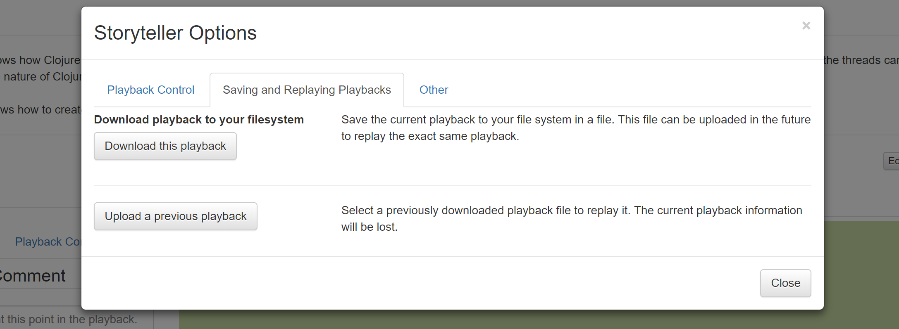

Options

There are some options that can be set by opening the Options modal with the link in the bottom right hand corner of the playback window. These options and features control playback and saving and restoring playbacks.
Playback Control

Playback Speed
The animation speed of the playback can be set in 25 ms increments to make experiencing playbacks comfortable for the viewer.
Pause for Comments
By default, an animated playback will pause on every comment. If the viewer would like view a playback without comments this option can be can be unchecked.
Show All Cuts and Pastes in Blocks
If text was removed or inserted in a programming session with cut or paste it is possible to view those operations in a single step. By default, this option is not selected and all cut and pastes will animate one character at a time.
Highlight Recent Changes
All new changes to a playback are displayed in blue (for inserts) and red (for deletes). It is possible to disable this option. It is also possible to clear the recent changes when paused in a playback.
Saving and Replaying Playbacks

Download a Playback
The documentation in Downloading the code in a playback
describes how to download the code associated with a playback. The zip file that holds this code also has a directory
called .storyteller that contains the data required to playback the history of that code.
If a viewer would just like to store the raw playback data (and not the code that goes with it) they can download a
single file called playbackData.json from any playback. This holds all of the information required to
generate a playback (which can then be used to download the source code). This file can be downloaded on this part
of the Options modal.
Tip: When sharing code and playbacks this is a convenient format to send to others.
Tip: Saving playbackData.json in this way preserves the
filters that have been applied to the playback.
Tip: An alternate way of saving a playback is to save the html file that gets generated by Storyteller using the browser's 'Save' option. This is a very fast and convenient way of saving and sharing a playback. One drawback is that if the playback is filtered the filters will not be present in the saved web page.
Upload a Playback
A playbackData.json file can be uploaded to play a stored playback. This will wipe out the current playback
in the browser.
Other

Font size
The size of the text can be increased or decreased using the size option.
Tip: There are convenient keyboard shortcuts for most of these options to make it easier to quickly navigate a playback.